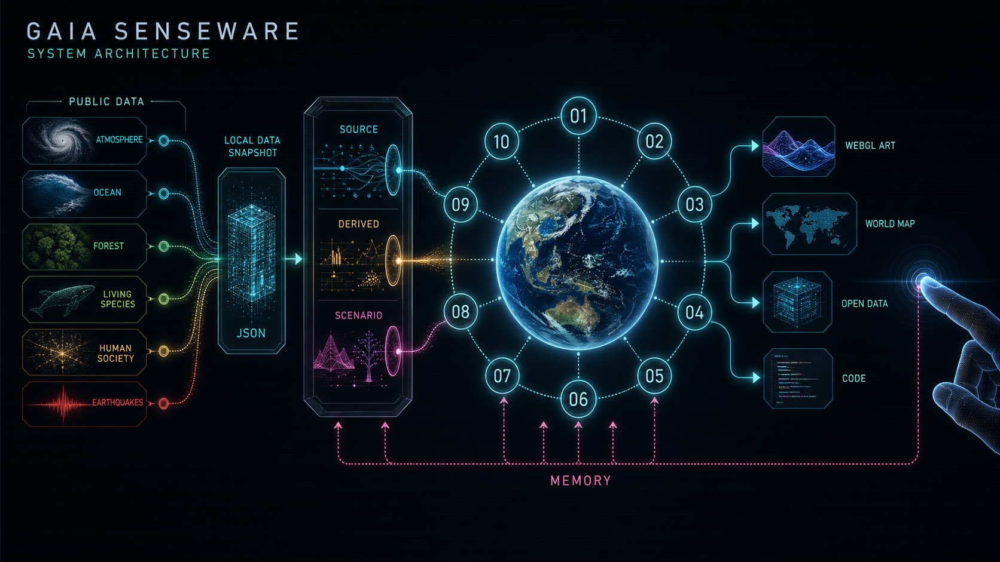

空気の声
CO₂の増え方と、地球の呼吸を見る。
Gaia Senseware / Planetary sensory system
CHOOSE / 10
空気、海、森、生きもの、ごみ、都市、地震、暮らし、エネルギー、そして全体。 いま気になる入口を、一つ選んでください。
気になるものを選ぶ
CO₂の増え方と、地球の呼吸を見る。
どちらから始めても、あとで10の感覚器を自由に切り替えられます。
BEHIND THE SENSES / 01

THE SYSTEM IN PLAIN WORDS
大気・海・森・生きもの・社会・地震について、公開されている観測記録を集めます。
審査中の通信障害で展示が止まらないよう、科学データはJSONと画像として作品内に保存しています。
測った値はSOURCE、欠測補完などの計算値はDERIVED、未来の仮定はSCENARIOと表示します。
数値を色、粒子、波、速さ、密度へ置き換えます。何をどう変換したかは、データとコードから確認できます。
観客の軌跡は各章の記憶となり、最後の「未完の地球センスウェア」へ戻ります。
CONTEST REGULATION
この作品の動きと操作は、ブラウザ標準機能だけで実装しています。 図版や公開データは展示素材であり、動作を代行する外部ライブラリではありません。
画面構造はHTML、展示デザインはCSS、描画と操作はJavaScriptで制作しています。
jQuery、Three.js、Pixi.js、anime.jsなどは不使用。WebGL2、Canvas、Fetch、Pointer EventsはChrome標準APIです。
PublicのGitHubリポジトリと、同じ審査用ブランチから公開したWebページURLを提出します。
マウス、タッチ、キーボード操作と可変レイアウトを用意し、両方の画面幅に対応します。
科学データはローカル・スナップショットを使用します。リアルタイムAPI接続は二次開発に分離しています。
PUBLIC DATA, IN PLAIN WORDS
データ名は、作品を難しく見せるための飾りではありません。 「誰が、何を、どのように観測したのか」を示す住所です。 ここでは、画面の光になる前のデータを、日常の言葉で紹介します。
温室効果ガス観測技術衛星「いぶき」
宇宙からCO₂やメタンを見つめる日本の人工衛星です。地表から宇宙まで続く 「空気の柱」に、CO₂が平均してどれくらい含まれるかを調べます。この値をXCO₂と呼びます。
この作品では 2010〜2025年のCO₂の濃淡を、世界地図の色として使います。雲などで観測できなかった空白は、実測値を上書きせず、統計で補った場所だと分かる模様にしています。
GOSAT公式データを見る ↗ハワイの空気を長く測り続けた記録
マウナロアの観測所で、実際の空気に含まれるCO₂を測った月ごとの記録です。 季節で上下しながら、長い時間では増えていく様子が見えます。衛星の世界地図とは違い、一地点の長期観測です。
この作品では 1958年からの時間軸をつくる基準と、未来を仮に延長する統計モデルの材料に使います。未来部分は観測結果ではなくSCENARIOです。
NOAA公式データを見る ↗地球の表面温度が、基準からどれだけずれたか
世界の地上観測と海面水温から、地球全体の表面温度の変化を推定したデータです。 表示するのは気温そのものではなく、1951〜1980年の平均と比べた「温度差」です。
この作品では CO₂の増減と同じ画面に色の傾向として重ねます。ただし、CO₂だけがその年の気温を決めたという因果関係は示しません。
NASA公式説明を見る ↗海の流れと、風・雨・太陽の条件
CoastWatchは海面の流れる向きと速さを、POWERは世界各地の風、降水、日射などを提供します。 海流と風は別の現象なので、この作品でも別の線として描きます。
この作品では 海流のu・v成分から粒子の移動距離を計算し、風は白い矢印として重ねます。14日後の線は、同じ流れが続いたと仮定するDERIVEDな思考実験で、海況予報ではありません。
昼の土地の姿と、夜の人間活動の光
MODISは森林、草地、都市、水面などの土地被覆を分類します。VIIRSは夜間に宇宙から見える光を記録します。 明るい場所が、そのまま排出量の多い場所という意味ではありません。
この作品では 森の形や生態系の層にはMODIS、都市の可視面にはVIIRSを使います。排出量は別のEDGARデータで描き、夜間光と混同しません。
生きもの同士の関係と、生きものが記録された場所
GloBIは「どの生物が、どの生物と関わったか」という文献上の関係を集めます。 GBIFは「いつ、どこで、その生物が記録されたか」を集める世界的なデータ基盤です。
この作品では 花と送粉者の関係はGloBI、ミツバチの観察地点はGBIFから示します。ただし、GBIFの地点でその送粉関係が起きたとは決めつけません。
ごみが、どれくらい再資源化されたか
「つくる責任、つかう責任」に関係する国連指標で、自治体ごみのうち再資源化された割合などを扱います。 国や地域によって、記録のある年や集計方法がそろっていない場合があります。
この作品では 実測の割合で粒子の行き先を分けます。値がない地域は近い5地域の中央値で補いますが、公式値ではないためDERIVEDと表示します。
国連の指標説明を見る ↗人間活動の排出量と、都市・電力の統計
EDGARは国や部門ごとの温室効果ガス排出量を、同じ考え方で比較できるよう推計したデータベースです。 World Bankは都市人口率や再生可能電力比率など、国ごとの社会統計をまとめています。
この作品では 排出量、都市化率、現在の再生可能電力比率を別々の層にします。国の合計値なので、地図上の一点の排出量を表すものではありません。
日本で観測した揺れと、世界の大地震
気象庁の震度は「その場所がどれだけ揺れたか」、USGSのマグニチュードは「地震そのものの規模」を表します。 似て見えても、同じ数値ではありません。
この作品では 日本の代表地震には実際の震度観測点、世界地図にはUSGSのM7.5以上を表示します。USGSの地震へ日本の震度を推測して付けることはしません。
人間が未来へ残すと決めた、文化と自然の場所
世界遺産一覧には、文化遺産、自然遺産、その両方の価値を持つ複合遺産が収録されています。 これは人の心や文化の豊かさを点数にしたデータではありません。
この作品では 「精神の生態系」を数値化する代わりに、記憶を受け渡す場所の一例として表示します。観客が大切にしたい場所を残す層とは分けています。
UNESCO公式一覧を見る ↗Planetary lens / Open map
ひとつの惑星を、国境ではなく水・熱・生命・地殻の循環として読む。 世界の公開データを、地球が発する異なる信号として聴く。
MAP SCALE
JMA HISTORY / SHINDO 6-JAKU+
地震を選ぶと波が走り、震度6弱以上を観測した各地点が立ち上がる。 JMA HISTORY / LOADING OBSERVATIONS同梱した公開データのスナップショットを読み込んでいます。
PLANETARY BASE / LOCAL VECTOR MODEL
DETAIL: OPENSTREETMAP WHEN AVAILABLE
INSTALLATION BANK / 01—10
番号を押すと、世界地図に重ねる感覚器が変わります
移動する
TOUCH共創の問いを送る
POI点を押して読む
CURATED LISTENING NODE
Planetary interface
地球の声を聴く、10の感覚器
ASK THE EARTH
ドラッグして、地球からの応答を待つ 指で触れて、地球からの応答を待つ
地球の一呼吸
季節ごとに上下する呼吸と、元へ戻らず蓄積するCO₂。その二つの時間を同じ大気から聴く。
同梱した公開データのスナップショットを読み込んでいます。